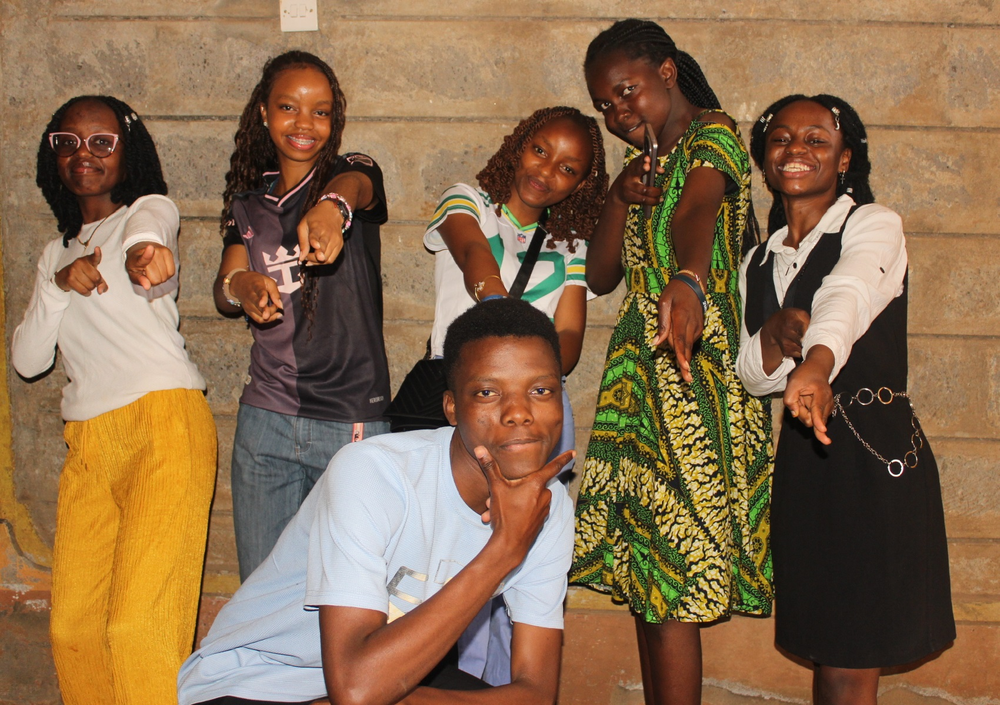
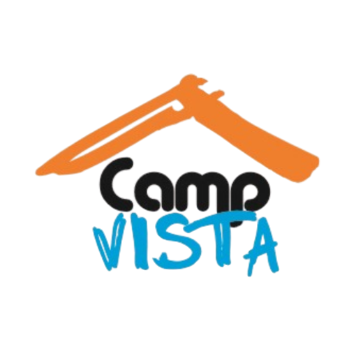
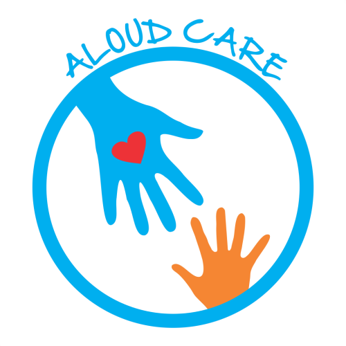
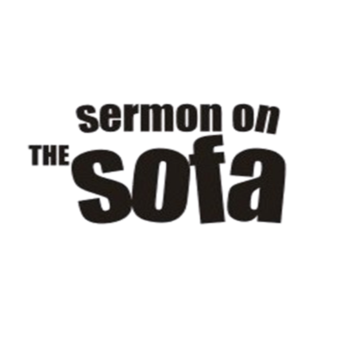
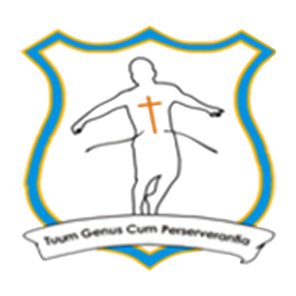
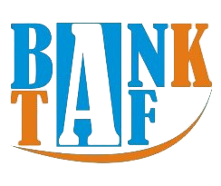
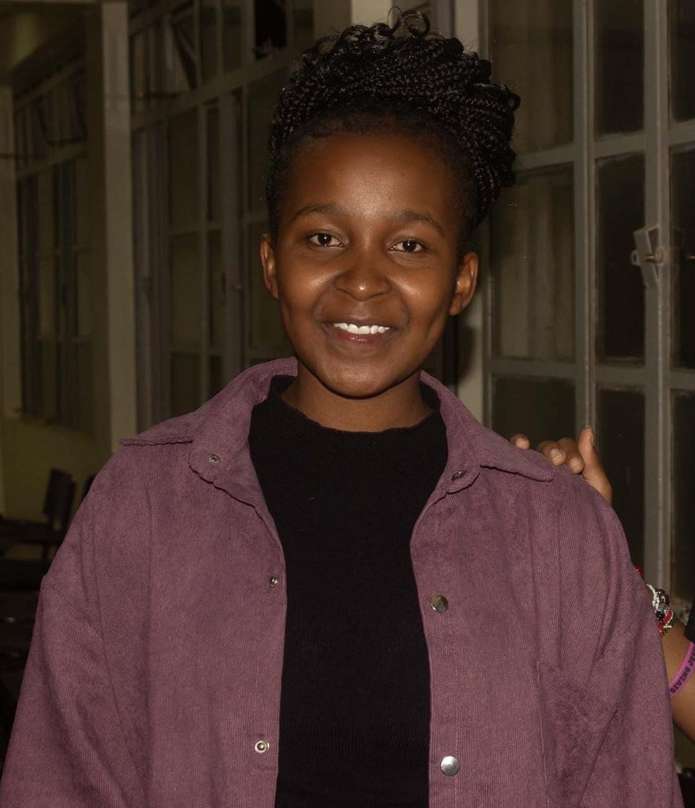

Empowering Teens Everywhere On The Globe
Welcome to Teens Aloud Foundation Kenya — Our vision is to challenge a young generation to believe in their gifted purpose and passionately pursue Jesus Christ.
Welcome to Teens Aloud Foundation Kenya — Our vision is to challenge a young generation to believe in their gifted purpose and passionately pursue Jesus Christ.
Raising a generation of bold, purpose-driven, and spiritually grounded young people.

Teens Aloud Foundation Kenya is a non-denominational and inter-denominational Christian youth foundation focused on empowering teenagers and young people to discover purpose, grow spiritually, and positively influence society.
Through mentorship programs, evangelism, discipleship, outreach missions, leadership training, and community service, we seek to nurture a generation that lives with confidence, integrity, compassion, and vision.
Our ProgramsWe impact lives through youth-centered sub ministries designed to nurture growth, leadership, and spiritual transformation.
Everything starts from this sub ministry which seeks to bring young people together to regularly meet and spur themselves unto love and good works. So wherever young people are found whether in communal settlements, schools, universities or offices Love Fellowships are located. In the process all Teens Aloud members belong to a Love Fellowship...
Learn more
Camps are a powerful means of re-igniting passions, building strong social networks and challenging worldviews. Camp Vista therefore builds and organizes camps for young people across the world with the aim of creating an atmosphere of change through interaction; interaction with the word of God and with other friends...
Learn more
In fulfillment of the vision of Teens Aloud to take our missions programs to the ends of the earth, this sub ministry creates opportunities across the world for young people to share their faith and to have some form of exchange programs with young people in other nations...
Learn more
It is the compassion ministry of Teens Aloud. Through the provision of basic needs of life namely food, shelter and clothing, this sub ministry passes on the love of God. Also, under their educare program many young people are sponsored through their education...
Learn more
In a quest to continuously innovate modern and relevant ways to reach out to teens, we developed in the year 2007, a unique entertainment package in Secondary Schools. Sermon on the Sofa is a mixed-bag evangelistic event intended to be a very hilarious, edifying and educative. Starting from Ghana in Achimota School in 2007 the train has travelled many schools in over 10 countries. Sermon on Sofa is also held in communities where young people are predominant...
Learn more
This is the sub ministry that ensures that opportunities are always created for us to reach out to teenagers in the primary Schools. We do this through leading and teaching them during their worship times in school, organizing career guidance courses to help them discover who they are and which course will be most appropriate for them to pursue in Secondary school. We also have exam seminars where we teach final year students how to succeed in their exams the right way...
Learn more
The vision of Teens Aloud asserts that every young person is gifted. Aloud creative therefore seeks to create a platform where young people with talents either in the liberal, visual or performing arts are given the opportunity to use it to fulfill the vision of Teens Aloud...
Learn more
Many young people desire to connect to God through worship whiles others desire to gain opportunities to display their singing talent. Aloud Choir therefore seeks to equip young people around the world to understand the lifestyle of worship whilst affording them opportunities to use their singing gifts and talents...
Learn moreThis sub ministry plays the watchman role for Teens Aloud by raising intercessors and young people with revelational gifts to pray into the nations as well as all the activities of Teens Aloud...
Learn more
This sub ministry seeks to reach young people using sports, games and other experiential learning methods. Sportstronic believes in harnessing the energies of young people, which is in abundance, to focus on the right things...
Learn more
Through classroom instruction, internships and life transforming events, Purpose Lyceum equips young people to gain discipline to influence the world by making the word of God the foundation of their lives. Purpose Lyceum has rolled out many residential and distance programs for young people. We also organize other training programs for various stakeholders like parents, teen church leaders and school teachers to equip them with the requisite and relevant knowledge, skills and attitude...
Learn more
This sub ministry is responsible for managing the entire finance and administration of the organization. With the vision of becoming a bank in future, Bank TAF ensures that enough money flows in both from within and without the organization in order to cover every expense incurred by the organization..
Learn moreThe principles that guide our mission, leadership, and impact among young people.
We dare to trust God’s word as having unseen creative power to deliver tangible results. (Hebrews 11:1).
We see each other as Christ saw us to give His life to us. (1 Jn 4:20-21).
We are the righteousness of God so our lives in secret reflect what we profess. (Ephesians 5:8, Proverbs 11:3).
We are quick to forget the yesterday in order to focus on the new and bigger things God is always doing. (Philippians 3:13).
We believe that before we were born, God created us in Christ Jesus to fulfill a sure assignment on earth. (Ephesians 2:10).
We believe that Faithfulness, Availability and Teachability are key requirements for discipleship. (Ruth 1:16).
We believe that God has a special plan for Teenagers and young people for that matter in these times, so we focus on reaching them especially. (Matthew 19:14).
We demand of ourselves uncompromising quality and strive to be people who demonstrate the God standard in everything we do (Colossians 3:23).
Every life touched is a testimony of hope, transformation, and purpose.
Reached out to
Teenagers Mentored
Community Outreach Events
Volunteers
Schools Reached

TAF has helped me manage my sexual desires, overcome temptations and rise up when I fall through accountability, sermons, podcasts, desire engagement courses, etc.
Join us in empowering the next generation through mentorship, outreach, discipleship, and youth empowerment programs. Together, we can raise purposeful and impactful young leaders.
Contact Us Today